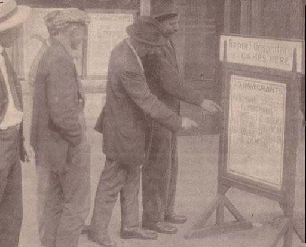

Fig 1:
Immigrants and native-born migrant laborers are encouraged to report unsanitary labor camps, in essence, to take responsibility for enforcing American standards of living and working conditions by CCIH complaint department. The poster invites immigrants to complain about their treatment for adjustment or ask for assistance. CCIH, Annual Report (1919).